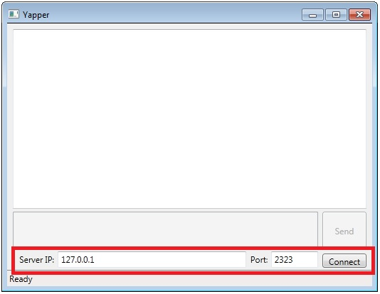
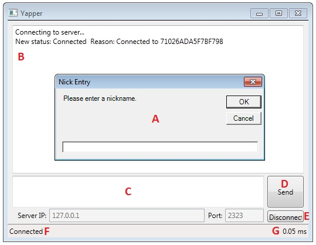
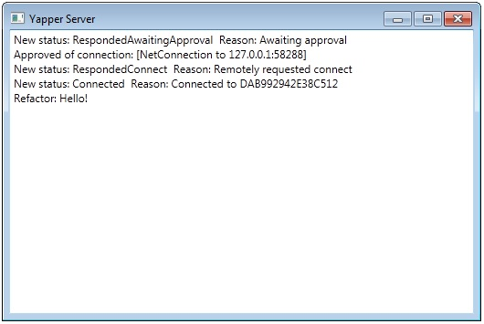

Yapper - User Guide
Yapper is a group chat application that consists of two parts, a client and a server. The server connects all participants to each other and marshals their messages. The client connects to a server, allowing users to participate in a chat session.
Yapper Client
To use the Yapper client you first must connect to a Yapper server.
Yapper client interface - currently disconnected.
Enter the IP address and port (default: 2323) into the area shown above and click 'Connect' to join a chat server. If you are hosting the server from the same machine on which you are running the client, connect to the default IP address 127.0.0.1.
When you have successfully connected to the server, the interface will update:
Yapper client interface - currently connected
- A. The first thing you'll see when you connect is a nickname prompt. Enter your desired alias, then click 'OK' or hit ENTER to confirm. Clicking 'Cancel' will leave your name blank.
- B. Message Box. Status messages, debug messages, server messages, and chat messages will all appear in this window.
- C. Send Box. Type messages in this box and click 'Send' (D) or hit ENTER to send it to the server.
- D. Send Button. Clicking this button will send the contents of the Send Box (C) to the server.
- E. Disconnect Button. This button will disconnect you from the server, returning the client to its disconnected state.
- F. Current Status. The typical statuses are Disconnected, Connecting, and Connected.
- G. Ping latency in milliseconds.
Yapper Server
Yapper server interface
To start a Yapper chat room, simply run the Yapper Server. Provide the server's IP address to those who wish to participate. The default port is 2323. If you are behind a firewall, make sure incoming and outgoing connections are cleared for port 2323. If you are behind a router, make sure to forward port 2323.